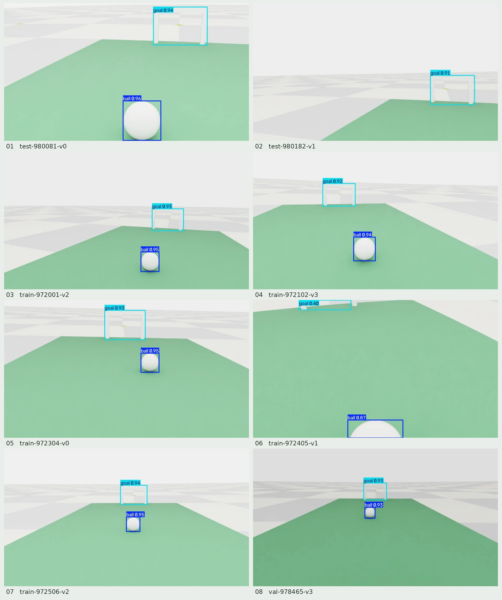

SELF-PACED WORKSHOP
让机器人看见足球
将图像检测、距离观测和身体姿态结合，得到导航可使用的信息。
任务：把图像中的目标变成可用观测
行走策略知道如何控制身体，却不知道足球在哪里。本章先用固定检测器在图像中找出足球与球门，再理解这些二维检测结果如何用于后续几何估计。目标检测回答“是什么、在图像中的哪里”；距离、方向和观测是否仍有效，则需要额外的几何与时间信息。
之所以选择学习型检测器，是因为目标大小、视角和背景都会变化。与手工设定颜色阈值相比，检测模型可以从标注样本中学习特征；代价是需要覆盖目标条件的数据和独立验证。课程先提供固定模型作为基准，再用小数据集体验训练。
results = YOLO(str(a.model)).predict(
source=[str(x) for x in paths], imgsz=640, save=True,
project=str(a.output.parent), name=a.output.name,
exist_ok=False, device='cpu'
)这里加载课程固定权重，以 640 的推理图像尺寸运行，并将检测框保存到新的输出目录。界面中的框会映射回原图坐标；不能将缩放后图像中的像素坐标直接用于原始相机内参。
代码位置：lab/detector.py。先阅读本节节选，再结合完整文件理解上下文。
三个互补的信息来源
| 来源 | 提供的信息 | 局限 |
|---|---|---|
| RGB | 目标在图像中的位置 | 不直接给出绝对距离 |
| ToF | 前方 64 个分区的距离 | 无效分区不能当作空地 |
| 身体 IMU | 身体姿态与角速度 | 不是球或球门定位器 |
RGB 检测器用于判断图像中哪些区域可能是球，ToF 则提供前方 8 × 8 个分区的距离信息，但它并不是覆盖机器人四周的激光雷达。机身 IMU 用于辅助估计姿态，使距离数据和图像射线能够在正确的坐标系中解释。任何一种传感器都无法独立给出完整的世界状态。
本课程的 Beta 仿真配置采用 GC2093 相机和 VL53L8CX ToF，图像处理分辨率为 960 × 540，频率为 15 Hz。镜头视场和噪声参数都属于仿真假设，迁移到真实设备时必须重新标定。
先运行固定检测器


python3 scripts/workshop.py detect \
--model models/detector.pt \
--source datasets/sample/images \
--output outputs/detection-01预期结果：生成标有球和球门检测框的图片。请逐张检查球体较小、靠近画面边缘或受到遮挡时的检测表现。检测置信度只是模型给出的分数，并不能保证目标判断一定正确。
- 1RGB 图像
- 2检测框
- 3图像射线
- 4距离与地面约束
- 5身体坐标下的目标
数据集、标签与检测指标
练习集包含 40 张图像，按 24 / 8 / 8 划分为训练集、验证集和测试集。训练集用于更新参数，验证集用于观察训练过程与选择模型，测试集应留到方案确定后再使用。该小样本集仅用于跑通训练流程，不能代表真实部署中的全部光照、遮挡、距离和背景条件。
每行标签按 class x_center y_center width height 排列；类别 0 为足球，类别 1 为球门，四个坐标量均按图像尺寸归一化。训练前，应将标签绘制回原图，检查边界框是否贴合目标；这比只确认文本文件存在更有意义。
IoU 衡量预测框与标注框的重合程度；精确率 P 表示检出目标中有多少是正确的，召回率 R 表示真实目标中有多少被检出。mAP 综合各类别的精确率—召回率表现；mAP50 使用 IoU = 0.5，mAP50–95 则对多个 IoU 阈值取平均。这些指标都不同于射门成功率。
YOLO('yolo26n.yaml').train(
data=str(config), epochs=a.epochs, batch=a.batch,
seed=a.seed, imgsz=640, pretrained=False,
project=str(a.output.parent), name=a.output.name,
exist_ok=False, device=0, workers=2, plots=True
)与前面的固定权重推理不同，本练习根据模型结构配置创建网络，并设置 pretrained=False，从随机参数开始训练。5 个 epoch 仅用于观察数据加载、损失计算和模型保存流程，不足以让检测器达到可用水平。
在一次相同配置的运行记录中，results.csv 第 5 轮的累计时间约为 6.05 秒，验证 mAP50 约为 0.00132，完整程序的启动耗时另计。这表明短练习工作流能够跑通，但模型效果很差；后续任务仍使用课程固定检测器。还应查看保存的标注图、漏检和误检，不能只关注损失是否下降。
扩充数据时，应增加对不同距离、朝向、遮挡和背景的覆盖，并按采集场景或序列划分数据，避免相邻的近似帧同时进入训练集和测试集。训练时间取决于数据量与预算；可先用短练习测量每轮耗时，再安排后续实验。
练习训练一个检测器
python3 scripts/workshop.py train-detector \
--data datasets/sample/data.yaml \
--epochs 5 \
--batch 8 \
--seed 303 \
--output outputs/student-detector-01小样本和 5 个 epoch 只用于体验数据准备、标注、训练和验证流程，并不是完整的训练方案。请打开输出目录中的损失曲线和验证图片，检查标签是否正确覆盖球与球门。如需正式提升效果，应增加场景多样性，并严格分开训练、验证和测试场景。
从像素射线理解距离估计
单个像素只能确定一条观测方向，不能直接给出距离。先用内参矩阵 K 将像素坐标反投影到相机坐标系，再用相机外参把射线转换到所需坐标系。下面以“射线与地面相交”为例，说明几何约束如何提供尺度；实际足球中心高于地面，必须使用与球体和相机相符的几何模型，不能把边界框中心直接视为地面接触点。
分母接近 0 时，射线与平面几乎平行；λ ≤ 0 时，交点不在射线前方。遇到这些情况应拒绝该结果，而不是强行给出距离。相机姿态还必须与图像采集时刻对齐；头部转动后若用新姿态解释旧图像，会引入偏差。
ray_camera = inv_K @ np.array([u, v, 1.0])
ray_camera /= np.linalg.norm(ray_camera)
ray_body = R_body_camera @ ray_camera
denominator = normal @ ray_body
# Check the denominator and the sign of the distance before using the intersection.
distance = -(normal @ origin + plane_offset) / denominator
point_body = origin + distance * ray_body这段示意代码用于对应公式；完整任务还会使用检测框几何、ToF 观测、头部运动学和有效性检查。验证时，应同时检查检测框是否贴合目标、像素是否使用正确内参、估计位置是否合理，以及图像是否过期。检测框正确并不意味着三维位置一定正确。
从一个像素到一条空间射线
在光学相机坐标系中，像素 \( (u,v) \) 对应的射线方向与 \( [(u-c_x)/f_x,\,(v-c_y)/f_y,\,1]^{\mathsf T} \) 成比例。内参中的 \(f_x,f_y\) 是以像素为单位的焦距，\(c_x,c_y\) 是主点。射线只表示方向；确定距离还需要已知几何或其他传感器提供约束。
相机坐标系通常规定 x 轴向右、y 轴向下、z 轴向前；本课程的机身坐标系则规定 x 轴向前、y 轴向左、z 轴向上。两者之间必须依据相机相对于机身的旋转和平移进行变换，不能直接把同名坐标轴上的数值相加。头部转动也会改变这一变换，因此目标定位必须使用对应时刻的头部关节状态。
ToF 的 8 × 8 距离网格并不是 64 个独立的物体标签。单个网格可能同时覆盖地面和球，近距离反射也可能产生无效读数。应先检查测距状态和有效范围，再判断这些数据能否支持图像中的目标。若把“没有有效测量”误解为“前方没有障碍”，后续导航就会建立在错误前提上。
曾经看见，不等于现在仍然知道
机器人移动或低头后，球可能暂时离开画面。虽然可以利用里程计在短时间内更新球的相对位置，但这种记忆会不断累积误差。一旦观测过期、ToF 数据无效或地面约束丢失，就应停止移动并重新观察，不能把缺失数据当作空地。
检查理解
检测器画出了准确的球框，就可以直接把球框中心当作世界坐标吗？
查看解析
不能。像素位置只能表示图像中的方向，还需要相机模型、相机姿态以及距离或几何约束，才能估计目标的空间位置。
检查标签与检测结果
练习集共包含 40 张图像，按照 24 / 8 / 8 划分为训练集、验证集和测试集。类别编号 0 表示球，1 表示球门。YOLO 标签的每一行采用 class cx cy width height 格式，后四项均按图像宽高归一化。例如，中心横坐标 0.5 表示画面宽度的一半，而不是世界坐标中的 0.5 米。
请从推理输出中各选一张检测正确的图像和一张困难样本，分别检查漏检、误检与检测框偏移，并观察同一物体在大小和位置上的变化。再高的置信度也无法修复相机标定错误，更不能让二维检测框自动获得深度信息。进入导航阶段前，还必须检查距离、姿态、时间戳和数据有效性。
检查理解
标签中的球框中心为 (0.6, 0.4)，是否可以直接作为导航目标 (0.6 m, 0.4 m)？
查看解析
不能。这是归一化图像坐标。需要相机模型和距离或地面约束，才能得到机器人坐标中的位置。